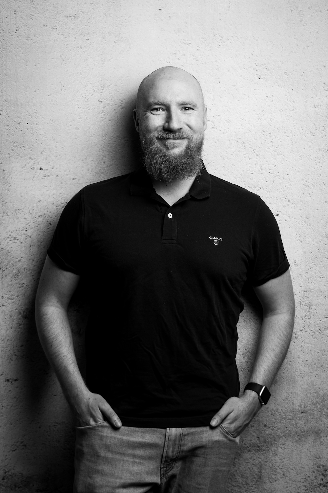

Software and Consulting

Moin und herzlich willkommen! Ich bin Marvin Kurock, ein leidenschaftlicher
IT-Consultant und Software-Entwickler
aus der wunderschönen Hansestadt Hamburg. Seit über einem Jahrzehnt bin ich in der faszinierenden Welt der
Informationstechnologie zuhause, mit einem Fokus auf Softwareentwicklung, Cloud-Infrastruktur und
-Architektur.
Meine Reise in der IT-Branche hat mir nicht nur ein tiefes Verständnis für komplexe Technologien verschafft,
sondern auch einen echtes DevOps-Mindset geprägt, welches es ermöglicht, Entwicklung und Betrieb nahtlos
miteinander zu verbinden.
Durch meine langjährige Erfahrung habe ich gelernt, dass es nicht nur darum geht, Code zu schreiben, sondern
vielmehr darum, Probleme zu lösen und Mehrwert für meine Kunden zu schaffen. Ich bin davon überzeugt, dass
maßgeschneiderte Lösungen, die auf individuelle Bedürfnisse zugeschnitten sind, der Schlüssel zum Erfolg sind.
Mein Ziel ist es, durch innovative Technologien und fortschrittliche Ansätze Ihre Visionen zu verwirklichen.
Ich bin davon überzeugt, dass harte Arbeit, Zuverlässigkeit und eine pragmatische
Herangehensweise die Grundlage für solide und skalierbare Lösungen bilden.
Ich freue mich darauf, gemeinsam mit Ihnen die Möglichkeiten der Technologie zu erkunden und Lösungen zu
entwickeln, die nicht nur effizient sind, sondern auch Ihre Erwartungen übertreffen.
Expertise


Webenwicklung
Als langjähriger Webentwickler bin ich spezialisiert auf die Realisierung herausragender
Webanwendungen mit JavaScript/Typescript und verschiedenen Frameworks. Meine umfassenden Fähigkeiten
erstrecken sich
über Angular, React, Svelte und Vue – allesamt leistungsstarke Technologien, die ich mit Begeisterung
einsetze, um ansprechende und effiziente Webseiten zu gestalten.
Ich beherrsche auch Metaframeworks wie Next.js,
Nuxt.js und SvelteKit, die die Entwicklung noch weiter optimieren und beschleunigen. Durch meine
Kenntnisse
in diesen fortschrittlichen Technologien bin ich in der Lage, maßgeschneiderte Lösungen zu schaffen, die
den
modernen Standards für Webentwicklung entsprechen.
Profitieren Sie durch den geschickten Einsatz von Frameworks und Metaframeworks innovative,
skalierbare und benutzerfreundliche Webanwendungen in kürzester Zeit zu entwickeln. Wenn Sie an einer
Zusammenarbeit
interessiert
sind oder mehr über meine Fähigkeiten erfahren möchten, zögern Sie nicht, mich zu kontaktieren.
Mobile Entwicklung
Als erfahrener Dienstleister im Bereich Mobile App Development biete ich maßgeschneiderte Lösungen sowohl
mit React Native als auch durch native iOS Entwicklung mit Swift, SwiftUI, WidgetKit und SiriKit. In der
dynamischen Welt der mobilen Technologien ist es mein Ziel, innovative und benutzerfreundliche
Anwendungen zu schaffen, die den individuellen Anforderungen meiner Kunden gerecht werden.
React Native - Effizient und plattformübergreifend
Mit React Native erstelle ich plattformübergreifende Apps, die auf iOS und Android gleichermaßen
beeindrucken. Die Verwendung von JavaScript/Typescript ermöglicht nicht nur eine effiziente Entwicklung,
sondern
bietet
auch kosteneffektive Lösungen ohne Abstriche bei der Performance. Mein Ziel ist es, Apps zu gestalten, die
nicht nur technisch brillant sind, sondern auch ein beeindruckendes Nutzererlebnis bieten.
Native iOS Entwicklung mit Swift, SwiftUI, WidgetKit und SiriKit
Für Kunden, die eine erstklassige iOS-Erfahrung suchen, setze ich auf die native iOS Entwicklung mit
SwiftUI.
Dabei integriere ich fortschrittliche Technologien wie SwiftUI für moderne und deklarative
Benutzeroberflächen, WidgetKit für dynamische Home-Bildschirm-Widgets und SiriKit für die nahtlose
Integration von Sprachbefehlen und intelligenten Siri-Funktionen.
Infrastruktur
Durch meine langjährige Erfahrung erstreckt sich meine Expertise über die gesamte Bandbreite der
Cloud-Technologien, wobei ich mich
besonders auf Infrastructure as Code (IaC) mit Terraform und Kubernetes fokusiert habe. Durch die
Automatisierung von
Ressourcenbereitstellung und -verwaltung ermöglicht Terraform eine effiziente und skalierbare
Infrastruktur, die den individuellen Anforderungen jedes Projekts gerecht wird.
Mit einem tiefgreifenden Verständnis für die besonderen Herausforderungen und Möglichkeiten, die
Cloud-Infrastruktur bietet, stehe ich Ihnen zur Seite, um Ihre digitalen Ambitionen zu realisieren. Lassen
Sie uns gemeinsam eine zukunftssichere und hochleistungsfähige Cloud-Plattform aufbauen.
Kontaktieren Sie mich, um mehr darüber zu erfahren, wie ich Ihnen dabei helfen kann, Ihre Cloud-Strategie
zu optimieren und Ihre digitale Transformation voranzutreiben.
Cyber Security
Mit einem großen Interesse an Cybersecurity setze ich mich als Hobby-Hacker intensiv mit den Vorgehensweisen von Hackern auseinander. Diese Erfahrungen fließen nahtlos in meine Arbeit als Software- und Cloud-Engineer ein. Durch die Anwendung dieses Wissens kann ich sicherstellen, dass meine Arbeit nicht nur leistungsstark, sondern auch sicher ist. Die gewonnenen Erkenntnisse über potenzielle Schwachstellen ermöglichen es mir, proaktiv Sicherheitsmaßnahmen zu implementieren und eine robuste Softwareentwicklung zu gewährleisten.
 LinkedIn
LinkedIn
 XING
XING marvin(@)kurock.io
marvin(@)kurock.io